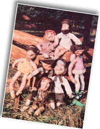
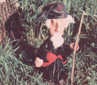
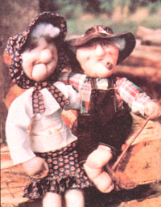
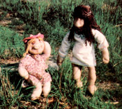

Being blizzard-bound can frazzle almost anyone now and then, and I'm no exception to the rule. I do try, however, to keep myself occupied during the cold season with a variety of interesting projects that help drive off the "midwinter blahs."
And the inspiration for one of my most entertaining endeavors came to me as I flipped through an article on how to make a comforter by stuffing old panty hose into squares pieced from material scraps.
Well, since I had sacks full of old nylons, and plenty of odds and ends in my scrap bag, the notion appealed to me. I didn't, however, relish the thought of cutting out 300 identical squares of fabric. So I twisted the idea around and stuffed the panty hose instead!
Once I'd gone that far, my imagination took off. Before long I found myself holding an odd little person fashioned from the piece of stuffed legwear. I went on to add arms and legs (giggling as I worked) and decked out the "stocking being" in homemade clothes. I knew I had a winner when my ornery old dog Omen began to growl at the funny little intruder.
I spent the remainder of that winter adding new, and often stranger, additions to the panty hose "family." When spring finally arrived, I herded my created crew into the nearest tourist town. The dolls proved to be extremely popular, and I suddenly found myself with a pocket full of cash and orders!
Actually, old stockings have been used for hundreds of years in the making of dolls (remember the sock monkey?). And the invention of nylons brought about a whole new range of design possibilities. The elasticity of hosiery material makes it perfect for molding facial features, and the simplicity of the technique guarantees that just about anybody who wishes to make his or her own dolls in this manner can expect to be pleased with the results.
You'll need only a few basic items to create your first stocking person: a needle and thread, a pair of unwearable panty hose, material scraps, scissors, a popsicle stick or tongue depressor, white glue, and a bag of polyester fiberfill. Try to use thread that closely matches the shade of hose you'll be working with, since by doing so you can make the stitches all but invisible.
Before you begin, you should also gather up a few buttons, some yarn, feathers, ribbon, or bells. Let your imagination be your guide, but remember to exclude tiny beads or buttons (or anything that could be swallowed) if your doll will be used as a gift for a young child.
A sewing machine can be a great help when assembling the doll's clothes, but if you have the time and enjoy stitching by hand (or if you lack electricity), it is quite easy to sew the togs manually.
To create the doll's noggin, simply cut off one foot of the pair of hose (do so at a point about five or six inches from the toe), and pack it with the fiberfill. If your piece of hosiery has runs in the foot, you could, instead, cut a section of nylon from the leg, stitch one end, turn it inside out, and stuff the resulting bag. The heads I make usually end up being about the size of a softball after they're stuffed.
Next, poke a hole in the polyester-filled opening with your finger or a pencil. Dab some glue on both sides of one end of the popsicle stick, and then insert it an inch or two into the hole. Tie a string tightly around the nylon and its wooden support to secure the neck. (The hose should extend a few inches below the string to insure an easy attachment to the body.)
I always begin bringing a doll "to life" by fashioning a nose for it, then proceed to the eyes or mouth. To make a round sniffer, insert the needle (using a single thread) through the top of the head and bring it out the center of the face. (Always run your needle through the top of the head and push it back out the same way after you've completed any facial feature. If you pierce the rear of the head, you'll wind up with a flattened noggin on your doll.)
Then, with tiny stitches, sew a circle around the diameter of the nose-to-be. Prick the hosiery in order to lift some stuffing into the center of the outlined ring. (Don't, however, stick the needle all the way in, it's easily lost!) When you've got a sizable bump protruding in the circle, work the needle through the center of the head and out the top. Pull gently until the "noose" tightens and the nose pops up, then knot and cut the thread.
To give your doll wide-open eyes, stitch the border for the orbs in the same manner as you did when making the nose. The sewn circles should be about the size of a quarter - when you gather the stitches, the area will shrink and bug out a bit.
The mouth is formed by inserting a threaded needle through the top of the head, as indicated previously, and bringing it out at a corner of the grin (or frown) to be. Run a gathering stitch from one corner of the mouth to the other, then return the needle through the crown. Again, the finishing sequence is pull, knot and cut.
Dimples look darling and are easily done. One tiny stitch is all that's required. Fluff up the cheeks first, then run the threaded needle through its usual route, pulling it out at the cheek's center. Take a tiny stitch there, then work the needle back through the head. Pull, knot and cut the string, and you've made a dimple!
With a little practice you'll soon learn which needlework techniques produce faces that convey humorous, angry, old and wrinkled, frightening, or bizarre expressions. Experiment as much as you like, and don't hesitate to pinch, pull or twist the nylon to produce the effect you're after.
If you'd like to add some color to the face, it's an easy matter to apply a bit of makeup or felt-tipped marker to the cheeks, eyelids, or lips. (I use old brush-on blush powder to highlight my dolls' cheeks, for example.) If you'd like to make your creation blue-eyed or browneyed, simply take one strand of colored embroidery thread and sew in circles around the orbs until you have achieved the desired effect. Lashes can also be stitched on with embroidery floss.
To create your little person's "crowning glory," glue fluffs of polyester fiberfill onto the top of its head or arrange yarn in different "styles." To do the latter, simply cut about 30 strands, each 20 inches long or so. Arrange the yarn pieces lengthwise, side by side, with a strip of sticky tape in the middle; sew through the middle of the tape and yarn to produce a center hair part; and glue or stitch the assembled wig onto the top of the doll's head. You can then make braids, a ponytail, pigtails or a bun - whatever seems to fit the face best.
Muslin, or almost any other kind of scrap material, will work well for making the body. Cut two 5-by-7-inch rectangles, pin them together, and sew a half-inch seam along all four edges (be sure to leave a centered two-inch opening in one of the five-inch sides). Then turn the material inside out and stuff the "pouch" with polyester fiberfill.
Next, poke a hole in the batting with your finger. Dab glue on the other end of the stick that's already attached to the head, and poke it into the cavity you created in the body, making certain that none of the wood is showing.
At this point, there should be one or two inches of panty hose at the bottom of the head overlapping the muslin. Pull it down over the body as far as it'll go, and stitch the stocking to the other fabric t o make arms for your funny fellow (or goofy gal), snip a six- or seven-inch piece of leg from a pair of panty hose. Then cut that section in half lengthwise, stitch the side and top of each part, turn them both inside out, and stuff the "pockets." (I always sew the top in a slightly rounded curve so it'll resemble a hand, and often divide it into fingers with a series of seams.)
You can attach the arms to the upper torso with straight pins. Then tuck in any loose ends before sewing tiny stitches all the way around the shoulders.
The legs are made in the same way as the arms. You'll have to increase the length of the panty hose sections used, however, and make shorter lines of stitches to produce toes.
Once in a while I get a kick out of producing dolls with huge bellies. To do this, just cut out a circle of panty hose about the size of a saucer. Glue a big round glob of fiberfill onto the center of the stomach area and cover it with the nylon circle. Then tuck in the edges of the hose patch and stitch around the belly and through the body material. Finish the chubby fellow's tummy with a belly button, which is made exactly as is a dimple.
If you aren't an experienced tailor, it might be wise to make up little patterns before cutting material for your doll's clothing. To do so, place the panty hose person on a piece of newspaper and trace around its torso, arms and legs. (Remember to leave a half-inch seam allowance on all sides.) Hats, shoes and other accessories can then be cobbled together to complete the wardrobe.
So far I've made over 30 dolls, and I haven't exhausted their potential for uniqueness yet. I usually devote two or three days to working on each creation, and - because I tend to get quite attached to every little character - I give them all names. Then, when I prepare one for sale, I decorate a card with the doll's name and an original poem about him or her, and attach it to one wrist with ribbon.
My panty hose people are priced from $15 to $30 each. (I charge $35 for special made-to-order creations, since it's often difficult to predict just how long it'll take to get a "custom" doll just right.)
I urge you to try your hand at this unusual craft. It's as old as the first beloved sock doll, and as new as contemporary soft sculpture. So, whether you're interested in preserving an old art form or experimenting with a new one, I think you'll find that panty hose people are entertaining to make and can quite possibly bring you in some extra cash, too!
|
 GUY HARRIS Save those old panty hose! Each of these unique dolls is tangible proof that you should never throw anything away. |
 GUY HARRIS A little practice and a lot of imagination went a long way in creating this dwarf. Note how the fingers and hands are made. |
 GUY HARRIS Granny and Gramps keep a close watch over the rest of the clan. Grandpa's toes are just shorter versions of fingers. |
|
 GUY HARRIS A homemade Miss Piggy look-alike takes an outing with a bearded companion. |
|
|